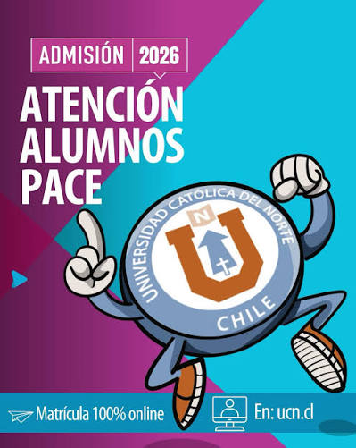
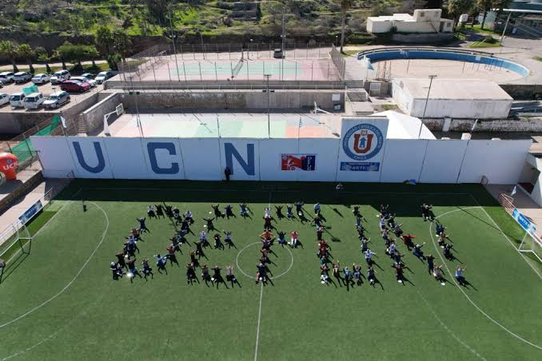
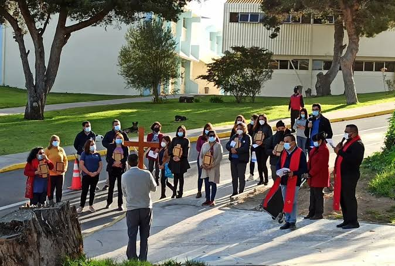
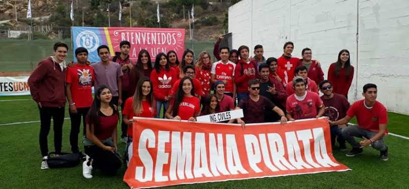
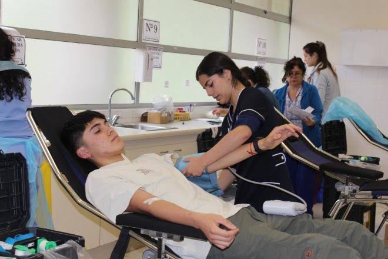
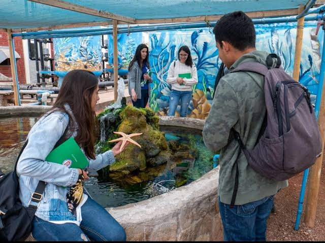
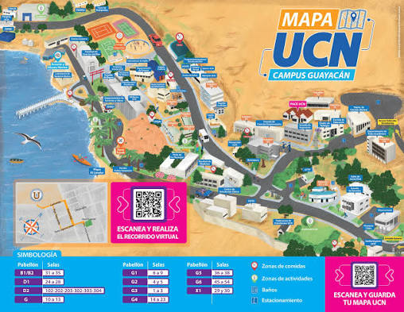
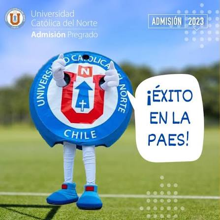

Nuestra visión
1Vida Universitaria y Pastoral
Los eventos de la Universidad Católica del Norte permiten a los estudiantes compartir y participar en actividades culturales, deportivas, recreativas y pastorales, fortaleciendo la comunidad y los valores que promueve la universidad.
2Desarrollo de Competencias Profesionales
La Universidad Católica del Norte promueve el desarrollo de competencias profesionales mediante actividades que fortalecen habilidades como el trabajo en equipo, el liderazgo, la comunicación y la responsabilidad, preparando a los estudiantes para su futuro laboral.
Portafolio

Alumnos pace
Seleccionar evento

Deportes
Seleccionar evento

Pastoral
Seleccionar evento
Hackathon
Seleccionar evento

Semana pirata
Seleccionar evento

Salud universitaria
Seleccionar evento

Acuario
Seleccionar evento
Apoyo académico
Seleccionar evento
Que dicen nuestros Alumnos

Maria
“Me gusta participar en las actividades de la universidad porque aprendo, comparto con mis compañeros y desarrollo nuevas habilidades.”
Andrea
“Los eventos de la universidad me ayudan a sentirme parte de la comunidad y a disfrutar más mi experiencia como estudiante.”
Conoce nuestra universidad
Universidad acreditada
La Universidad catolica del Norte da un mayor reconocimiento en la formación de sus alumnos.

Espacios verdes
La universidad cuenta con espacios recreativos donde los estudiantes pueden disfrutar de su tiempo libre.

Apoyo academico
Tutorías, orientación y apoyo para mejorar el rendimiento y facilitar el aprendizaje de los estudiantes.